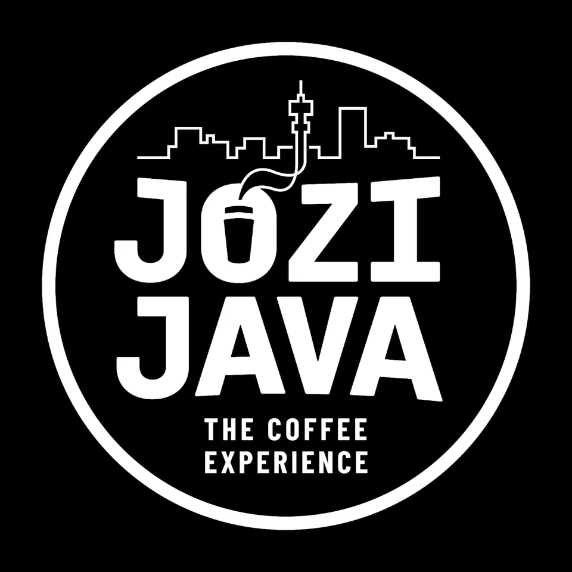

Our Story
Gauteng’s Greatest Coffee 2025Jozi Java started in 2023 as a family business founded by Chris and Ruth Neumann. Our home is The Roastery in Douglasdale, Johannesburg, where we roast The Wilds Roast, Pritchard Street Roast and Douglasdale Decaf.
Our café at Monte Circle and coffee bars at Ford Fourways, Ford Sandton and Ford Woodmead bring our coffee to the places Joburg lives and works. We welcome families, colleagues and anyone looking for a good cup of coffee.
In 2025, Jozi Java was named 702’s Gauteng’s Greatest Coffee Shop.
Find UsThe Roastery
Visit us at 2 Honeyguide, Douglasdale, or order our beans for home. Choose whole beans or a grind for the way you brew.
Shop BeansEquipment & Supply
Alongside our cafés, we supply commercial coffee equipment, Piaggio coffee cart conversions, beans and consumables to businesses. Our team can help plan your setup, training and ongoing supply.